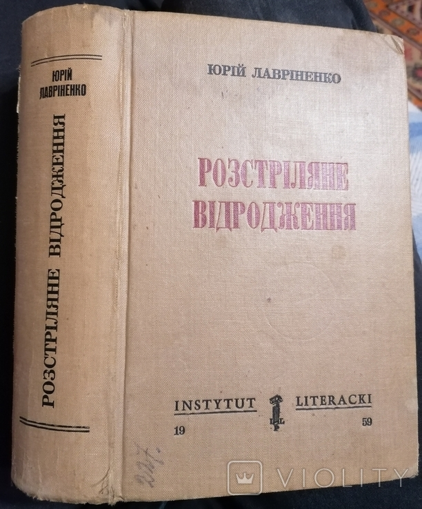
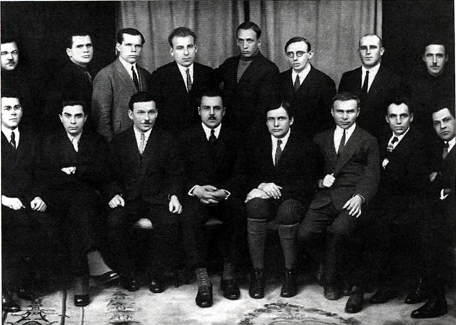
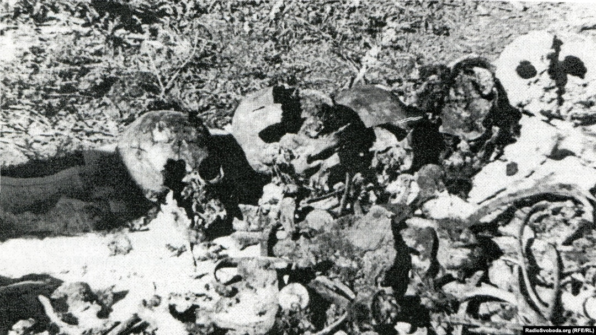
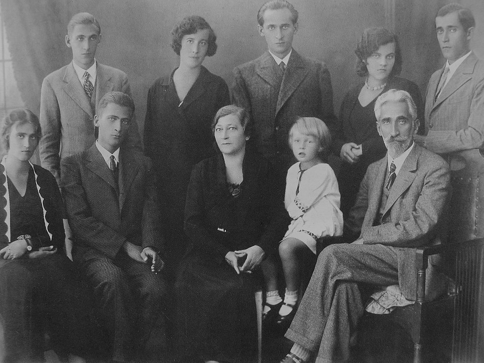

«Розстріляне відродження» — літературно-мистецьке покоління 20 – початку 30-х рр. в Україні, яке дало високохудожні твори у галузі літератури, живопису, музики, театру і яке було знищене тоталітарним сталінським режимом. Література цього періоду відзначається багатством стилів, жанрів, вершинних мистецьких надбань.
Термін «Розстріляне відродження» вперше запропонував діаспорний літературознавець Юрій Лавріненко, вживши його як назву збірника найкращих текстів поезії та прози 1920-1930-х рр. За це десятиліття (1921—1931 рр.) українська культура спромоглася компенсувати трьохсотрічне відставання й навіть переважити на терені вітчизни вплив інших культур, російської зокрема (на 1 жовтня 1925 року в Україні нараховувалося 5 000 письменників).
Оригінал збірки «Розстріляне відродження»
Це відродження було пов’язане з тим, що українські митці навіть за умов замовчування й заборони створили тексти, гідні світового поціновування. Початком масового нищення української інтелігенції вважається травень 1933 року, коли 12- 13 травня відбулися арешт Михайла Ялового і самогубство Миколи Хвильового у харківському будинку «Слово».
На той час осередком української культури вважалося місто Харків.
Головними літературними об’єднаннями були «Ланка» (пізніше «МАРС»), «Плуг», неокласики «Молодняк», «Спілка письменників західної України», ЛОЧАФ (об’єднання армії та флоту). Найвпливовішим був «Гарт», який пізніше був перейменований на «ВАПЛІТЕ» («Вільну Академію Пролетарської Літератури»).
Члени ВАПЛІТЕ у Харкові, 1926р.
У 20-30рр. ХХст. українська мова була головною в великих українських містах. Радянська влада проводила активну політику,
щоб ситуація кардинально змінилася. А саме:
1. Знищувала українську інтелігенцію
2. Нав’язувала україномовним людям комплекс меншовартості.
3. Унеможливлювала кар’єрний ріст українців, якщо вони не переходили на російську
4. Призначала на керівні посади в українських містах вихідців із Росії.
У жовтні-листопаді 1937 року в урочищі Сандармох на півночі Росії було розстріляно 1111 в’язнів, серед яких було 130 українських письменників. Це було влаштовано на честь 20-річчя Революції
Місце першого розкопу у Сандармосі
Перед письменниками стояв вибір: самогубство (Микола Хвильовий), репресії і концтабори (Борис Антоненко-Давидович (Давидов), Остап Вишня (П. Губенко)), замовчування (Іван Багряний (Лозов’ягін), В. Домонтович (Петров)), еміграція (В. Винниченко, Є. Маланюк) або писання програмових творів на уславлення партії (П. Тичина, М. Бажан).
Представників інтелігенції, що належать до «Розстріляного відродження», умовно поділяють на кілька груп, обумовлених їхнім життєвим шляхом під час та після сталінських репресій.
Першу групу безпосередніх жертв терору становлять письменники Валер’ян Підмогильний, Валер’ян Поліщук, Марко Вороний, Микола Куліш, Микола Хвильовий, Михайль Семенко, Євген Плужник, Микола Зеров, художники-бойчукісти, Лесь Курбас та багато інших, що були знищені фізично, тобто страчені або померли в концтаборах, чи вчинили самогубство, перебуваючи за півкроку від арешту.
Частині репресованих й переслідуваних представників української радянської інтелігенції вдалось уникнути найвищої міри покарання і вижити в тюрмах та концтаборах. Причому декому з них вдалося навіть втікати з концтаборів (Іван Багряний). Відбувши свій строк, Остап Вишня продовжував писати, а Борис Антоненко-Давидович, якого звільнили лише після реабілітації у 1957 році, до кінця життя залишався в опозиції до радянського режиму.
Третю умовну групу становлять ті діячі культури, які уникли репресій, але через те, що їхній доробок теж був далеким від соцреалізму і вузьких партійних рамок, він був також засуджений радянською владою. Творчість таких осіб теж забороняли й замовчували, твори вилучали зі сховищ і знищували. Більшість цих осіб померла ще до розгортання масових репресій (Леонід Чернов (Малошийченко), Олександр Богомазов, Гнат Михайличенко), дехто врятувався завдяки тому, що відійшов від активної діяльності, як, наприклад, Марія Галич, дуже небагатьом вдалось вчасно емігрувати (Юрій Клен (О. Бургардт).
До четвертої групи належать митці, чия творчість або чітко відповідала компартійним нормам, або ж (здебільшого) зазнала в період сталінських репресій значних змін. Страх за свою безпеку в умовах масового терору змушував швидко пристосовуватись, перетворюючись на пропагандистів від мистецтва. Твори Максима Рильського, Павла Тичини, Володимира Сосюри, Івана Кочерги й багатьох інших, створені в цей час та в подальшому, не мають високої художньої вартості, індивідуальності форм і стилів, є типовими зразками соцреалістичного пропагандистського мистецтва.
У тридцяті роки була також знищена і значна кількість діячів культури старшого покоління, яка стала відомою ще до приходу радянської влади і належала до покоління діячів початку XX століття, а не 1920-1930-х років. Це Людмила Старицька-Черняхівська, Микола Вороний, Сергій Єфремов, Гнат Хоткевич та інші.
Розстріляна і знищена родина Крушельницьких. Сидять (зліва направо): Володимира, Тарас, Марія (мати), Лариса і батько Антін. Стоять: Остап, Галя (дружина Івана), Іван, Наталя (дружина Богдана), Богдан. Це фото стало символом знищення більшовицьким режимом української інтелігенції
За приблизними підрахунками, в УРСР у 1930 – ті роки ліквідували близько 80% творчої інтелігенції. Із 259 українських письменників, які друкувалися у 1930 р., після 1938 р. виходили друком твори тільки 36 (своєю смертю померли лише 7 письменників). Тож літературне покоління, яке було знищене більшовицькою владою, назвали «Розстріляним відродженням».
Завдяки політиці українізації вони активно включились у процеси розбудови української літератури, культури, науки, що відбувались в УРСР; дехто з них задля цього повернувся з еміграції, як Микола Вороний, або спеціально переїхав з українських країв під владою Польщі, як Антін Крушельницький з родиною.